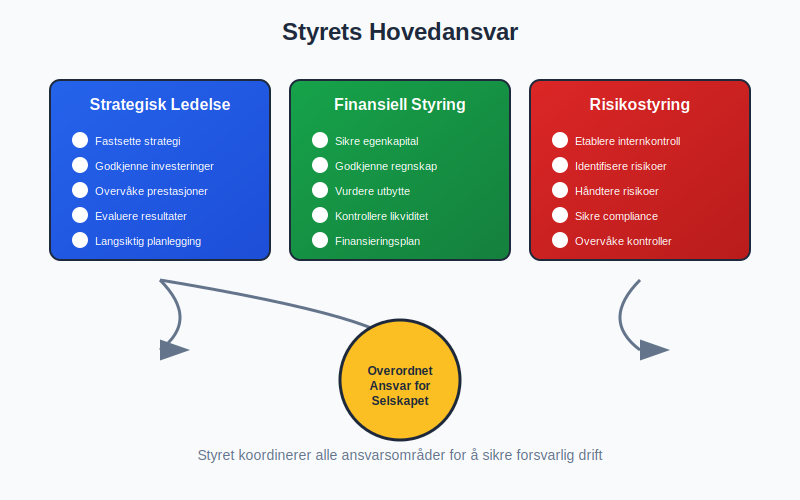
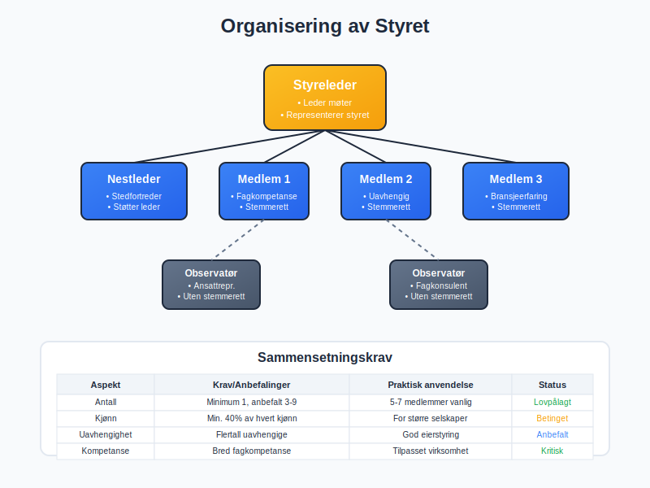
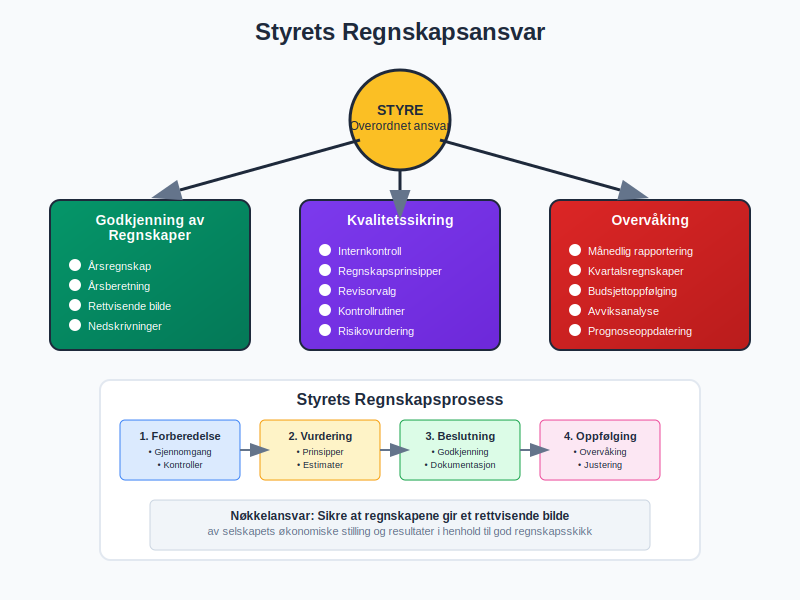
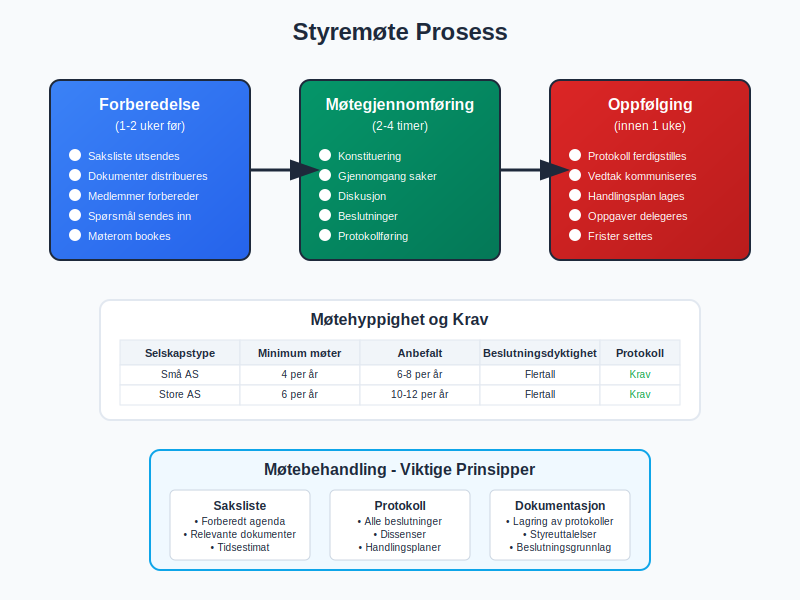
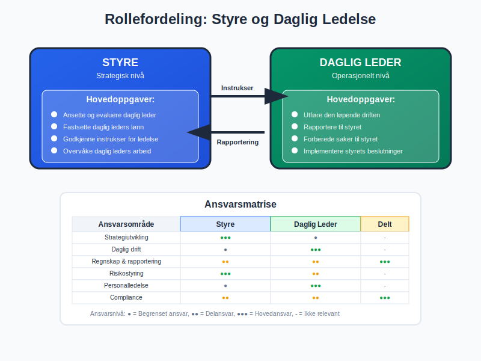
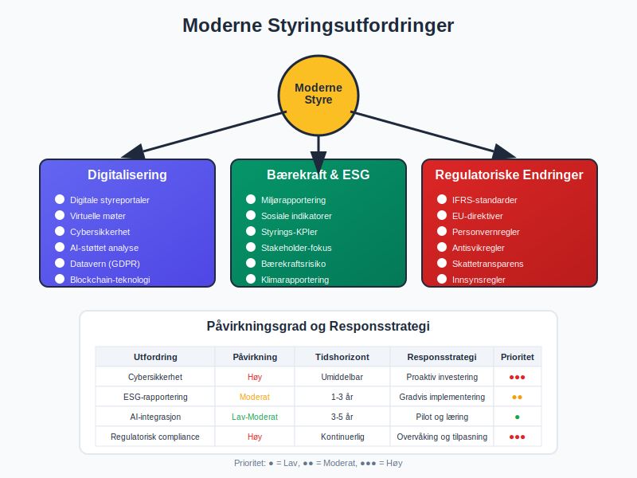
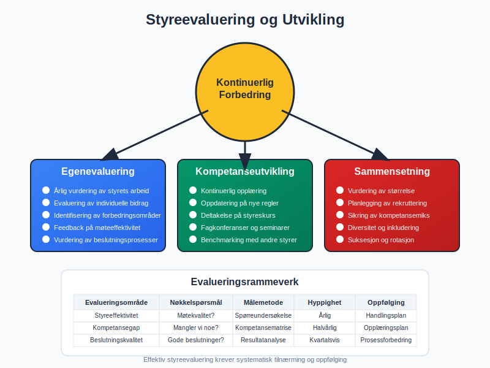
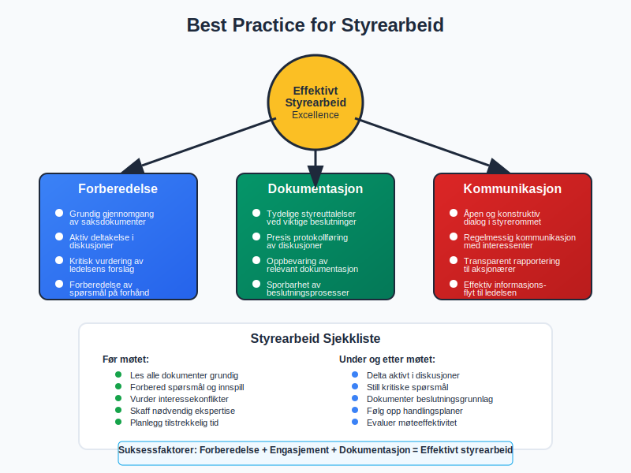
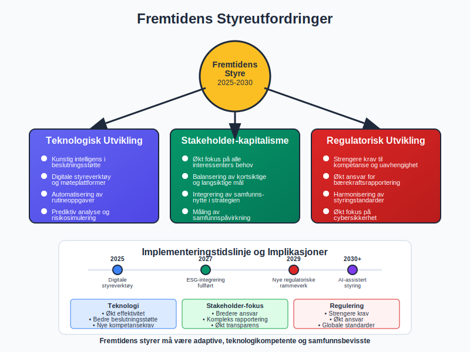

Et styre er det sentrale ledelses- og styringsorganet i et aksjeselskap (AS), valgt av og ansvarlig overfor aksjonærene. Styret fungerer som selskapets øverste beslutningstaker og har det overordnede ansvaret for virksomhetens strategiske retning, risikoforvaltning og overvåking av daglig ledelse. I regnskapssammenheng spiller styret en kritisk rolle i finansiell rapportering, kontroll og internkontroll.
Se også: Hva er et styremedlem?, Hva er et styremøte?, Styreverv.
Styrets Lovpålagte Ansvar
Styret har omfattende juridiske forpliktelser som er nedfelt i aksjeloven og spesifisert i selskapets vedtekter. De viktigste ansvarsområdene inkluderer:

Strategisk ledelse:
- Fastsette selskapets overordnede strategi og forretningsplan
- Godkjenne større investeringer og finansieringsbeslutninger
- Overvåke og evaluere selskapets prestasjoner mot strategiske mål
Finansiell styring:
- Sikre forsvarlig egenkapital og likviditet
- Godkjenne årsregnskap og årsberetning
- Vurdere og beslutte om utbytteforslag
Risikostyring:
- Etablere og overvåke effektive internkontrollsystemer
- Identifisere og håndtere vesentlige forretningsrisikoer
- Sikre compliance med relevante lover og forskrifter
Administrativt ansvar:
- Sørge for at selskapet fører en nøyaktig og oppdatert aksjeeierbok.
- Påse at den årlige Aksjonærregisteroppgaven blir korrekt levert.
Styresammensetning og Organisering

Et styre består normalt av 3-9 medlemmer, avhengig av selskapets størrelse og kompleksitet. Sammensetningen reguleres av flere faktorer:
| Aspekt | Krav/Anbefalinger |
|---|---|
| Minimum antall | 1 medlem (for små AS), 3 medlemmer (anbefalt) |
| Maksimum antall | Ingen lovpålagt øvre grense, men 9 er praktisk maksimum |
| Kjønnsbalanse | Minst 40% av hvert kjønn (for større selskaper) |
| Uavhengighet | Flertall av uavhengige medlemmer anbefales |
| Fagkompetanse | Bred kompetanse innen relevante fagområder |
Styreverv og roller:
- Styreleder – Leder styremøter og representerer styret eksternt
- Nestleder: Fungerer som stedfortreder for styreleder
- Styremedlemmer: Deltar i beslutninger og utøver sitt styreverv
- Observatører: Kan delta uten stemmerett (f.eks. ansatterepresentanter)
Styrets Rolle i Regnskapsføring

Styret har det overordnede ansvaret for selskapets regnskapsføring og finansielle rapportering:
Godkjenning av regnskaper:
- Behandle og godkjenne årsregnskap før generalforsamling
- Sikre at regnskapet gir et rettvisende bilde av selskapets økonomiske stilling
- Vurdere behov for nedskrivninger eller andre justeringer
Aksjonærer kan strukturere sin eierstyring og påvirkning på styrearbeidet gjennom en aksjonæravtale som regulerer stemmerett, styrevalg og andre styringsmekanismer.
Kvalitetssikring:
- Etablere rutiner for internkontroll av regnskapsrapportering
- Overvåke valg av regnskapsprinsipper og deres anvendelse
- Vurdere behov for ekstern revisjon og velge revisor
Styremøter og Beslutningsprosesser

Styret må møtes regelmessig for å utføre sine oppgaver effektivt:
Møtehyppighet:
- Minimum 4-6 møter per år for vanlige selskaper
- Månedlige møter for større eller mer komplekse virksomheter
- Ekstraordinære møter ved behov for viktige beslutninger
Møtebehandling:
- Saksliste: Forberedt agenda med relevante saker
- Beslutningsdyktighet: Flertall av styremedlemmer må være til stede
- Protokoll: Skriftlig referat fra alle styremøter
- Dokumentasjon: Lagring av styreuttalelser og beslutninger
Styrets Ansvar for Internkontroll

Styret må etablere og overvåke effektive internkontrollsystemer:
Kontrollmiljø:
- Fastsette etiske retningslinjer og verdier
- Definere roller, ansvar og myndighet
- Sikre kompetent og integrert ledelse
Risikovurdering:
- Identifisere og vurdere forretningsmessige risikoer
- Etablere risikoappetitt og toleransenivåer
- Implementere risikohåndteringstiltak
Kontrollaktiviteter:
- Autorisasjonsrutiner for transaksjoner
- Funksjonsadskillelse i kritiske prosesser
- Regelmessig avstemming og kontroll av regnskapsdata
Styret og Daglig Ledelse

Forholdet mellom styret og daglig leder er fundamentalt for selskapets styring:
Styrets oppgaver:
- Ansette og evaluere daglig leder
- Fastsette daglig leders lønn og arbeidsvilkår
- Godkjenne instrukser for daglig ledelse
- Overvåke daglig leders arbeid og resultater
Daglig leders oppgaver:
- Utføre den løpende driften innenfor styrets rammer
- Rapportere regelmessig til styret om virksomhetens utvikling
- Forberede saker til styrebehandling
- Implementere styrets beslutninger
Ansvarsproblematikk og Forsikring

Styremedlemmer kan bli personlig ansvarlige under visse omstendigheter:
Erstatningsansvar:
- Brudd på forsvarlighetskravet i aksjeloven
- Mangelfull overvåking av selskapets risiko og kontroll
- Brudd på lojalitetsplikt overfor selskapet
Beskyttelse:
- Styreansvarsforsikring: Dekker økonomiske tap ved erstatningskrav
- Due diligence: Grundig forberedelse til styremøter
- Dokumentasjon: Sikre at beslutninger er godt dokumentert
Moderne Styringsutfordringer

Dagens styrer møter nye utfordringer som krever tilpasning:
Digitalisering:
- Implementering av digitale styreportaler og møtesystemer
- Overvåking av cybersikkerhet og datavern
- Vurdering av nye teknologiers påvirkning på forretningsmodellen
Bærekraft og ESG:
- Integrering av miljø-, sosiale og styringsmessige faktorer (ESG)
- Rapportering på bærekraftsindikatorer
- Overvåking av selskapets samfunnsansvar
Regulatoriske endringer:
- Tilpasning til nye regnskapsstandarder som IFRS
- Implementering av nye rapporteringskrav
- Overholdelse av GDPR og andre personvernregler
Styreevaluering og Utvikling

Effektive styrer gjennomfører regelmessig evaluering og utvikling:
Egenevaluering:
- Årlig vurdering av styrets arbeid og effektivitet
- Evaluering av individuell kompetanse og bidrag
- Identifisering av forbedringsområder
Kompetanseutvikling:
- Kontinuerlig opplæring i relevante fagområder
- Oppdatering på regulatoriske endringer
- Deltakelse på styreskurs og fagkonferanser
Sammensetning:
- Regelmessig vurdering av styrets størrelse og sammensetning
- Planlegging av rekruttering av nye medlemmer
- Sikring av riktig kompetansemiks
Best Practice for Styrearbeid

For å sikre effektivt styrearbeid bør følgende prinsipper følges:
Forberedelse:
- Grundig gjennomgang av saksdokumenter før møter
- Aktiv deltakelse i diskusjoner og beslutninger
- Kritisk vurdering av ledelsens forslag
Dokumentasjon:
- Tydelige styreutalelser ved viktige beslutninger
- Presis protokollføring av diskusjoner og vedtak
- Oppbevaring av relevant dokumentasjon
Kommunikasjon:
- Åpen og konstruktiv dialog i styrerommet
- Regelmessig kommunikasjon med interessenter
- Transparent rapportering til aksjonærer
Fremtidens Styre

Styrearbeid vil fortsette å utvikle seg i takt med samfunnsendringer:
Teknologisk utvikling:
- Bruk av kunstig intelligens i beslutningsstøtte
- Digitale styreverktøy og møteplattformer
- Automatisering av rutineoppgaver
- Økt fokus på alle interessenters behov
- Balansering av kortsiktige og langsiktige mål
- Integrering av samfunnsnytte i strategien
Regulatorisk utvikling:
- Strengere krav til kompetanse og uavhengighet
- Økt ansvar for bærekraftsrapportering
- Harmonisering av internasjonale styringstandarder
Et effektivt styre er avgjørende for selskapets langsiktige suksess og bærekraft. Ved å forstå og oppfylle sitt ansvar bidrar styret til verdiskaping for aksjonærer samtidig som det sikrer forsvarlig drift og god selskapsstyring. Et styre er det sentrale ledelses- og styringsorganet i et aksjeselskap (AS), valgt av og ansvarlig overfor aksjonærene. Styret fungerer som selskapets øverste beslutningstaker og har det overordnede ansvaret for virksomhetens strategiske retning, risikoforvaltning og overvåking av daglig ledelse. I regnskapssammenheng spiller styret en kritisk rolle i finansiell rapportering, kontroll og internkontroll.
For en oversikt over ulike lederroller og deres ansvar, se også artikkelen Leder.